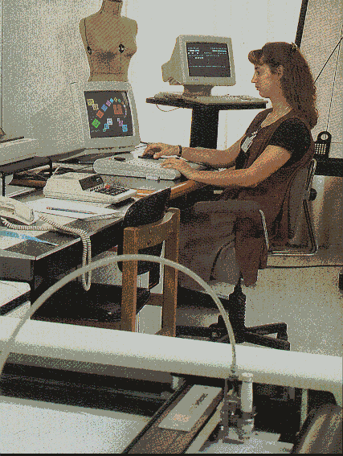
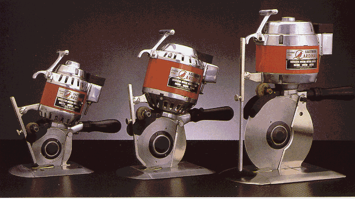
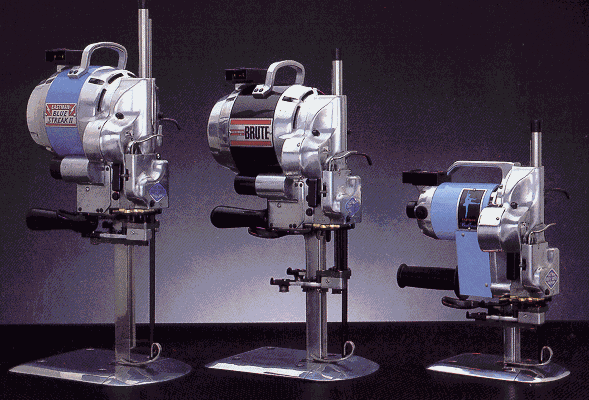
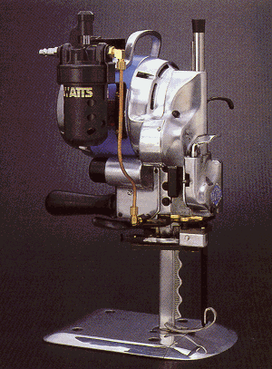
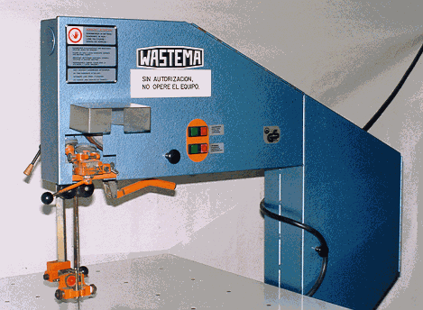
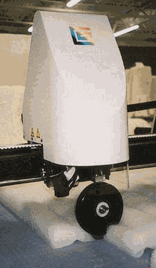

TRAZO Y CORTE INDUSTRIAL
|
1 |
|
|
2 |
|
|
3 |


El marcado o dibujado del perfil de los patrones según las características dimensionales del tejido a emplear, puede realizarse directamente sobre el tejido ( tejidos a cuadros o rayas) o sobre papel. En cualquier caso es conveniente efectuar un estudio previo de colocación de los patrones a escala reducida ( normalmente a escala 1/5).
De la mejor o peor forma de situarlos obtendremos un consumo menor o mayor de materia prima textil que incidirá de una manera directa en el costo y precio del artículo. Por este hecho el trazo ( marcado) es un trabajo que requiere un cuidado especial porque de ello depende el aprovechamiento del tejido.
Es importante poder llegar a cuantificar el grado de aprovechamiento del tejido, ello se consigue conociendo la superficie conociendo la superficie de los patrones y la superficie del rectángulo de la marcada; se utiliza la siguiente fórmula:
Sumatoria de SP
A = -------------------------------
Sumatoria de RM
A = al aprovechamiento del tejido
Sumatoria SP = Sumatoria superficie de los patrones
Sumatoria RM = Sumatoria del rectángulo de la marcada
El grado de aprovechamiento de un tejido para una prenda de vestir será siempre inferior a 1 (uno) , pudiendo llegar a la unidad en algunos casos de artículos especiales : sábanas, pañuelos, etc., en los cuales los patrones son figuras geométricas regulares.
3.1.1 - SISTEMAS PARA TRAZAR
a - SISTEMA MANUAL
Dibujo a mano del perfil de los patrones sobre una superficie plana ya sea sobre papel o tela. Si se ha de repetir la marcada y esta se hace sobre papel, se puede hacer copias colocando varios papeles superpuestos e intercalando papel carbón entre ellos. Una vez efectuado el corte la marcada queda destruída.
b - SISTEMA PERFORADO
Se efectúa el trazo ( marcado ) sobre papel; una vez dibujado se procede a perforar el contorno de cada una de las piezas o figuras con un pin o punzón. Para reproducir esta marcada sobre el tejido basta colocarlo sobre el mismo y espolvorearlo con polvos tipo negro humo o talco, pasando estos tejidos y quedando adheridos a él; la misma marcada tiene una larga duración.
c - SISTEMA POR PULVERIZACIÓN
En este sistema la moldería debe estar completa ( ejemplo : los moldes marcados 2 x tallas y marcados izquierdo derecho). Se colocan estos sobre el tejido o el papel como armando un rompecabezas. Terminado el trazo se procede a espolvorear, ( polvos tipo negro humo o talco ) en los espacios vacíos , quedando adheridos al material y marcada la silueta de los moldes.
Se completa la marcada colocando un adhesivo (cinta pegante) en el cual se coloca la información deseada (talla, lote, etc.)
d - SISTEMA FOTOGRÁFICO
Se extiende el papel fotográfico sensibilizado sobre la mesa, se depositan los patrones sobre él, siguiendo la posición del estudio previo. Se pasa seguidamente un carro con unos potentes focos de luz ultravioletas que actúan sobre las partes del papel que está al descubierto, no así en las cubiertas por el patrón, luego se fija esta imagen escalando el papel en atmósfera amoniaca. El perfil de los patrones queda marcado con extrema nitidez.
Proceso de reducir moldes reales a diferentes escala de 1/5 , 1/3, 1/8, etc…
La miniaturización permite:
Reducir costos
Conocer consumo o promedio
Largo del trazo
Programar el trazador
Longitud del rollo
Estudio previo de la marcada
3.1.3 - NORMAS PARA TRAZAR
Tener muestra física
Conocer el tipo de tejido
Verificar que la moldería esté completa
Verificar la proporción de las tallas
Medir el Ancho útil de la tela
Aplomo de los moldes
Ubicación de las piezas ( agrupar piezas o tallas)
Tolerancias
Distribución de las piezas ( cambiar tallas o piezas mayores y menores)
Trazos mas largos menos consumo de tejido
Codificación de las piezas trazadas
Tener en cuenta las veces a trazar
Señalización de los moldes
Colocación de las piezas izquierdo y derecho
Conocer la forma de trazar cuadros y rayas
Realizar al máximo los empates
Conocer que es una espiga

Consiste en estirar o extender una o varias piezas de tejido sobre una mesa de dimensiones adecuadas, cortándolas al largo que corresponda según la marcada estudiada previamente. El extendido se puede hacer en forma manual y autómático con máquina extendedora. l
3.2.1 - EXTENDIDO MANUAL, SE HACE EN DOS FORMAS:
3.2.1.1- EXTENDIDO EN ZIG – ZAG
En este extendido se utilizan unas barras metálicas planas colocadas al principio y final del extendido respectivamente.
El tejido se lleva manualmente hasta el otro extremo del tendido colocando sobre éste una barra metálica sobre estas se pliega el tejido y se retrocede estirando una nueva capa hasta la barra inicial , donde se realiza un nuevo plegado usando una varilla similar a la anterior. De esta forma se va repitiendo el ciclo, sacando en cada vuelta la varilla correspondiente al plegado anterior y realizando uno nuevo.
3.2.1.2- EXTENDIDO CON CORTE EN CADA CAPA
Básicamente constituyó el método usado desde los inicios de la confección . Consistía en llevar el tejido hasta una marca efectuada sobre la mesa , donde finalizaba la marcada y en dicho punto, se sujetaba la tela por medio de una barra metálica plana o pesas. Los operarios retrocedían en vacío analizando la hoja extendida, luego se procedía a cortar . Esta operación se repetía tantas veces cuando fuere necesario.
Esta forma de operación sigue vigente en muchas empresas o talleres; no obstante en la gran mayoría de ellos efectúan el extendido manual pero auxiliandosen de unos aparatos diseñados para tal operación; como, carros extendedores, cortadoras de extremos.
3.2.2- EXTENDIDO AUTOMÁTICO CON MÁQUINA EXTENDEDORA:
Consiste en colocar un rollo de tela sobre un soporte móvil, que se desliza a lo largo del extendido, el cual durante su recorrido se encarga de ir dejando el tejido posado sobre la mesa de corte
Con este sistema se consiguen dos objetivos fundamentales: rapidez en los operarios para efectuar la operación y mayor aprovechamiento del tejido.
3.2.3 - SISTEMAS DE EXTENDIDO
3.2.3.1- EXTENDIDO CARA ARRIBA
El extendido comienza en el extremo inicial de la marcada, donde se coloca el rollo, se deposita el tejido sobre la mesa hasta llegar al extremo final donde se efectúa el corte al ancho del tejido. Luego se devuelve al vacío hasta el inicio del tejido y se repite la operación cuantas veces sea necesario.
Es el extendido típico del tejido estampado de cuadros o de rayas.
3.2.3.2 - EXTENDIDO CARA A CARA ZIGZAG
Se inicia en cualquiera de los extremos de la marcada. El tejido se deposita en el extremo elegido y el operario (máquina) se desliza hacia el otro extremo, dejando el tejido al mismo tiempo. Al llegar al extremo opuesto, éste es doblado y el operario (carro extendedor) retrocede extendiendo al mismo tiempo; y así sucesivamente. Este sistema es el mas rápido y se utiliza para tejido de forro de bolsillo..... como se llama el tejido?
3.2.3.3- EXTENDIDO CARA A CARA GIRANDO
Se comienza al igual que en los casos del extendido a una cara, en el extremo inicial de la marcada. El operario (carro extendedor) va extendiendo hasta el extremo opuesto donde es cortado el tejido, procediendose a girar el tejido o el portarrollos (máquina transportadora) antes de volver al principio de la marcada, para empezar a extender la siguiente capa. Por tanto el tejido en segunda capa irá con su cara hacia abajo y en la misma dirección del hilo que en la primera.
Este sistema se utiliza en tejidos con pelo tales como: Terciopelo, cordoroy, pana, piel durazno, etc. Además se utiliza en tejidos para la ropa interior, como licra, naylon, (tejidos lisos, delicados y difíciles de manipular).
3.2.3.4- EXTENDIDO EN ESCALAS
Es una variable entre los extendidos cara arriba y cara a cara girando, donde si bien el círculo de trabajo es idéntico, las longitudes de las capas son diferentes. Esto es debido a que se intentó extender dentro de la misma marcada tallas con cantidades diferentes.
Este tipo de extendido es empleado por confeccionistas con gran variedad de modelos y pocas cantidades por tallas, puesto que de esta manera se puede completar un pedido con una sola marcada, ahorrándose todos los tiempos de preparación de marcada y cortes que se necesitarían si se extendieran todas las tallas individuales. Al mismo tiempo se consigue mayor velocidad en el extendido, trazo y corte y por lo tanto un incremento en el rendimiento de cada mesa de corte.
3.2.3.5- EXTENDIDO EN FORMA TUBULAR
El método de trabajo es idéntico a los extendidos cara arriba y Zigzag , las diferencias con respecto a ellos radica en la forma de colocación del género y a los dispositivos especiales que llevan las máquinas extendedoras para alimentar y depositar las hojas dobles del tejido tubular.
3.2.3.6- EXTENDIDO DE TEJIDO A LOMO
Fue el sistema con el que se inició la confección, fue la única forma de uso que hubo en sastrería y similares, es en la actualidad una incidencia menor y progresivamente descendiente. No obstante aún tiene la suficiente importancia para que pueda ser usada una máquina con los dispositivos necesarios, a fín de que las capas de tejido doblado queden perfectamente extendidos.
El tipo de extendido de tejido a lomo es siempre en Zigzag o sus variantes en escalón

Es el desplazamiento de la máquina cortadora en determinado tendido, siguiendo el perfil de las piezas trazadas. Si es en una máquina cortadora Sin-Fin ( cinta ) se destroza el tendido, se lleva hacia la mesa donde está localizada la máquina cortadora, aquí se desplaza el tendido, no la máquina cortadora.
3.3.1 - DESTROZAR:
Se llama destrozar el efecto de cortar en bloque el conjunto de telas del colchón sin gran precisión, es decir sin seguir en todo el recorrido los perfiles dibujados de los patrones.
Para esta forma de cortar se emplean máquinas de corte de dos tipos: Cortadora circular (disco), cortadora vertical.
3.3.2 - SISTEMAS DE CORTE
3.3.2.1 - CORTE DE CUCHILLA DE DISCO (CIRCULAR)
Para cortar curvas de radio grande o líneas rectas. También se utiliza para corte de tendidos inferiores a un (1) centímetro de altura; principalmente muestras.
En las empresas de corsetería (ropa interior) para el corte de encajes, pues estos tejidos limitan el extendido a un número reducido de capas, debido al diseño y complejidad para manipularlos.
La colocación ergonómica de los mandos permite al contador activar el interruptor de energía y afilador de toque suave con la misma mano ,asegurando unos cortes continuados , precisos y limpios.
El elemento cortante puede ser poligonal o circular según el tipo de material a cortar. La mayor dificultad para los filos poligonales estriba en su afilado que debe ser hecho fuera de la máquina con la consiguiente dificultad y pérdida de tiempo.

3.3.2.2- CORTE CON CUCHILLA VERTICAL
La máquina utilizada está formada por un motor eléctrico que transmite el movimiento a una cuchilla mediante ruedas dentadas (piñones) y un mecanismo de bielas. Tiene un movimiento alternativo y perpendicular a la superficie de la mesa.
El elemento cortante puede ser de filo continuo o dentado según el tipo de tejido a cortar. El afilado se hace mediante un mecanismo situado al frente o al lado de la cuchilla. Está compuesto por dos cintas SIN-FIN cruzadas de abrasivo; que, además de tener rotación las propias cintas, el conjunto del mecanismo se desplaza en sentido alternativo a todo el largo de la cuchilla estando esta en funcionamiento.
Cómo es lógico, este afilado debe efectuarse con la máquina fuera del colchón del tejido.
La máquina está diseñada para trabajo pesado, piezas grandes y tejidos rígidos.
 
3.3.2.3- CORTE CON CUCHILLA DE CINTA O SIN-FIN
Esta máquina permanece estática, lo que se mueve es el material para cortar, empujado por la mano del operario/a.
El elemento cortante es un fleje afilado de un ancho aproximado de un (1) centímetro y espesor inferior a ½ mm, empalmando en forma de cinta sin - fin, que se mueve enter tres volantes ( según el esquema siguiente):
Los volantes 2 y 3 son fijos y el 1 es móvil para permitir la introducción de la cinta y poder tensionar la misma.
A y B son dos elementos guiadores situados en la parte superior e inferior respectivamente del plano de trabajo.
Con esta disposición mecánica de corte se consigue :
Una mayor velocidad del elemento cortante.
Un movimiento continuo del mismo
Una perfecta perpendicularidad del elemento cortante en relación con el plano de trabajo.
Una mayor seguridad y facilidad de corte al ser la máquina fija y moverse el tejido.
En algunos modelos , próximo al guiador A o entre el volante 1 y 2 se sitúan dos muelas ( esmeriles ) que mediante presión manual se aproximan a la cinta para su afilado durante la marcha de la misma.
Para evitar el desplazamiento de las telas ( deslizamiento ) al ser movidas se sujetan estas mediante pinzas.
El corte con esta máquina es de gran precisión el cual puede aumentarse reduciendo el espesor a cortar (número de capas).

3.3.2.4- CORTE POR PRESIÓN ( TROQUEL)
Las prensas de presión pueden ser neumáticas o hidráulicas, según el esfuerzo por realizar y su forma de trabajo.
Para el trazo se utilizan moldes cortantes , los cuales se colocan en la prensa o troquel según la proporsión de talas a trazar.
El extendido se realiza igual a la técnica convencional , teniendo en cuenta que el largo y el ancho del tejido no superen el tamaño de la base del troquel.
El plato superior puede tener dos movimientos , sempre el de ascenso - descenso (efectúa el troquelado).
En algunas prendas hay desplazamiento rotatorio del plato superior para facilitar la colocación de las telas y el troquel.
Cuando el troquel de la pieza tiene unas dimensiones reducidas conviene que este tenga unos elementos de expulsión de las telas que quedan embutidas en su interior.
Cuando éste es de amplias dimensiones la expulsión se hace a mano.
La técnica de corte por presión a troquel se utiliza :
1 - en tejidos difíciles de manipular como los tejidos sintéticos ( se funden).
2 - tejidos a los cuales se les hace un proceso especial ( entretela fusionables ).
Estos tejidos pueden ocasionar problemas cuando son cortados con otro tipo de cortadoras ( verticales, circulares y Sin - fin).
